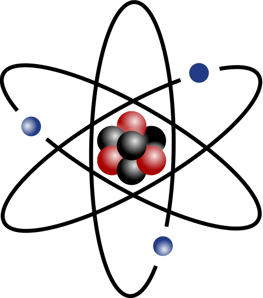

Nuclear physics research centers on two areas - nuclear structure and nuclear matter. Nuclear structure focuses on protons, neutrons, ionized atoms, and the particles that make them up - quarks and gluons. Nuclear matter focuses on different compositions of nuclei - the quark gluon plasma (created in high-energy collisions), neutron stars, and nucleon gases, to name a few. You can find some of the latest research here. The division in the Department of Energy will also keep you busy.
